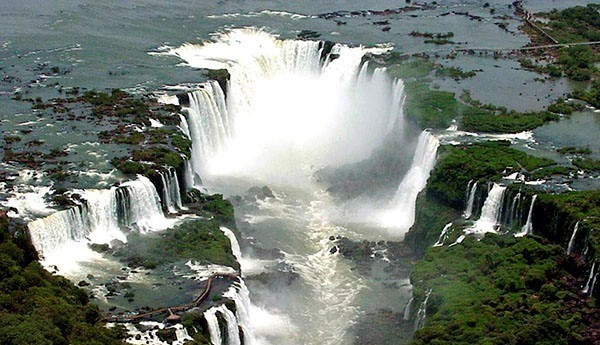
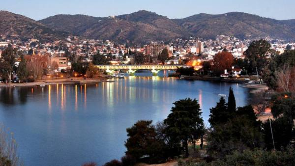
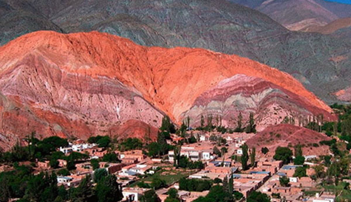
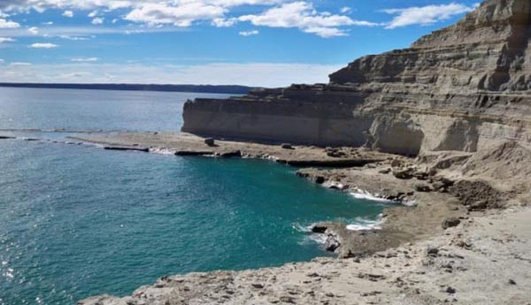
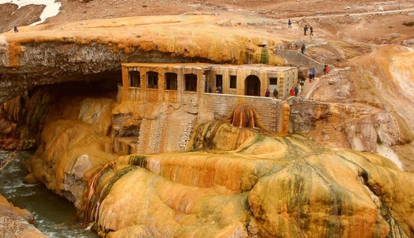
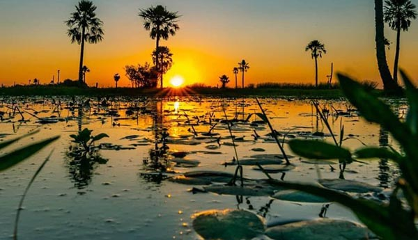

Puerto Iguazú, Misiones

Entre sus límites las más fascinantes bellezas constituyendo paisajes de ensueño habitados por las más diversas especies de flora y fauna. Admiración de indescriptibles panoramas, safaris fotográficos, y la increíble sensación del contacto con la tierra y el aire puro, tanta hermosura parecerá no caberle en los ojos ni en el cuerpo.
Leer más
Villa Carlos Paz, Cordoba

La ciudad de todos, se erige venturosa entre el cordón montañoso de las Sierras Chicas y las Sierras Grandes. Se posiciona como el segundo destino turístico del país, y ofrece al viajero eventos culturales, actividades recreativas, distensión, aventura, movida nocturna, comodidades, servicios y todo en el marco de un espléndido paisaje.
Leer más
Quebrada de Humahuaca

Se encuentran el pueblito Volcán; la antigua capilla de Tumbaya; Purmamarca y su atractiva feria artesanal; Posta de Hornillos y su museo del siglo XVIII; Maimará que resplandece con sus carnavales; la tradicional Tilcara y su aborigen Pucará; Huacalera y su materialización del cruce del Trópico de Capricornio; y la colonial Humahuaca.
Leer más
peninsula Valdes, Chubut

Península Valdés recibe la mayor población reproductora de ballenas francas australes, con más de 2000 catalogadas por el Whale Conservation Institute y el Ocean Alliance. La región contiene seis reservas naturales, y está considerada uno de los principales y más importantes destinos de avistamiento de ballenas en el planeta, particularmente alrededor de Puerto Pirámides y la ciudad de Puerto Madryn. Además se avistan orcas, toninas overas, pingüinos, elefantes marinos y gran variedad de aves, entre otros.
Leer más
EL

El Parque Provincial Aconcagua es un área protegida en los Andes argentinos, en la frontera con Chile. Allí se encuentra el monte Aconcagua, cuya cima está cubierta de nieve y que es uno de los más altos de Sudamérica. En la entrada del parque se puede tomar un camino hasta la laguna Los Horcones y la Quebrada del Durazno.
Leer más
Esteros del Iberá

Plagando de naturaleza el centro norte de la provincia de Corrientes, los Esteros del Iberá, declarados Reserva Natural por su belleza exótica, su importancia ecológica y su variada fauna, abarcan cientos de miles de hectáreas con múltiples lagunas y espejos de aguas menores, conformando uno de los circuitos de turismo aventura más desafiantes de Argentina.
Leer más